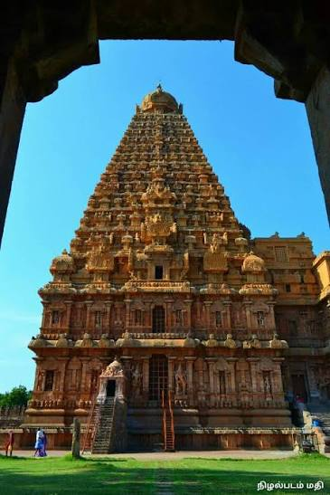
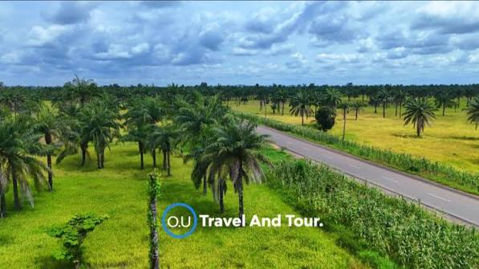
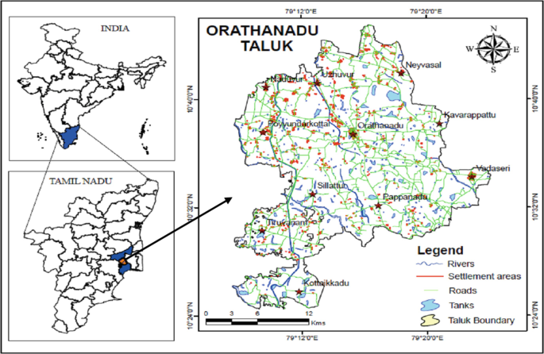

About Orathanadu
Orathanadu is one of the important taluks of Thanjavur district in the state of Tamil Nadu, India. It serves as an administrative division with its headquarters located at Orathanadu town. The taluk spans an area of approximately 398.41 square kilometers and is home to a population of over 1.6 lakh people, as per the 2011 census. Situated close to the Kaveri River, Orathanadu is blessed with fertile soil, which makes it an important region for paddy and agricultural cultivation. The taluk is part of the larger Thanjavur revenue division, along with Thanjavur, Thiruvaiyaru, and Budalur taluks. Known for its rural charm, Orathanadu reflects the traditional agrarian lifestyle that Thanjavur district is famous for across Tamil Nadu.
Facts
- District: Thanjavur
- Headquarters: Orathanadu
- Area: 398.41 km²
- Total Population (2011): 1,60,367
- Male Population: 77,719
- Female Population: 82,648
- Households: 40,383
- Literacy Rate: 75.16%
- Children (0-6 years): 15,597
Heritage & Culture

Orathanadu carries a rich historical legacy, having formed part of the territory ruled by the great Chola dynasty, one of the longest-reigning dynasties in South Indian history. During this period, the region contributed significantly to the agricultural prosperity of the greater Thanjavur area, which later came to be known as the "Rice Bowl of Tamil Nadu." Even today, the influence of Chola-era architecture can be seen in the local temples scattered across the taluk, many of which showcase intricate Dravidian-style carvings and structures. The people of Orathanadu continue to preserve their Tamil heritage through regular temple festivals, traditional music, and community celebrations that have been passed down through generations. An interesting fact about the region: in 2008, Orathanadu recorded 660 millimeters of rainfall within a single 24-hour period, setting a regional precipitation record for Tamil Nadu at that time — a testament to how closely tied the region's identity is to water, rain, and agriculture.
Economy & Agriculture

Agriculture forms the backbone of Orathanadu's economy, with paddy cultivation being the primary occupation of most households in the taluk. The fertile soil, nourished by the waters of the Kaveri River, supports extensive rice farming along with other crops such as sugarcane, pulses, and vegetables. Many families in the surrounding villages are dependent on farming and allied activities like dairy and poultry for their livelihood. Alongside agriculture, small-scale trade, local markets, and traditional crafts also contribute to the local economy, keeping the rural character of the taluk intact even as nearby towns develop.
Transport & Connectivity
Orathanadu is well connected to major cities and towns through regular bus services, making it accessible for daily commuters, students, and traders. The taluk's administrative headquarters manages public services for its many households and surrounding villages. While Orathanadu does not have its own railway station, the nearest rail connectivity is available through nearby towns, and Tiruchirappalli International Airport serves as the closest air travel option for the region.
Demographics Snapshot

As per the 2011 census, Orathanadu recorded a population of 1,60,367 people across 40,383 households. The gender distribution shows 77,719 males and 82,648 females, resulting in a sex ratio of 1063 females per 1000 males — higher than the national average. The taluk also recorded 15,597 children in the 0–6 age group. With a literacy rate of 75.16%, Orathanadu reflects steady educational progress, supported by the schools and colleges functioning across the region.